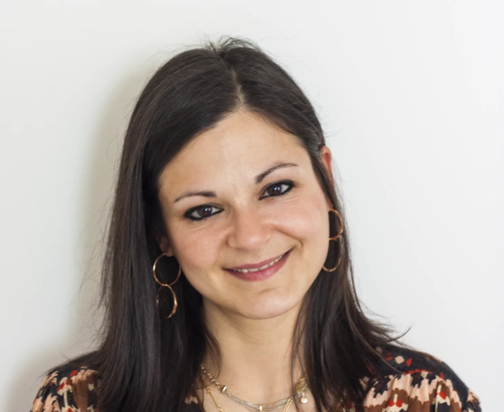

Il mio percorso di formazione inizia con il conseguimento della maturità classica presso il liceo Madonna della Neve di Adro (BS).
Ottenuta la laurea in Scienze e Tecniche Psicologiche presso l’Università degli Studi di Milano Bicocca, mi sono specializzata in Psicologia Clinica e della Salute all’Università degli Studi di Firenze. Ho superato l’esame di stato per l’abilitazione all’esercizio della professione di Psicologa iscrivendomi all’Albo Professionale degli Psicologi e Psicoterapeuti della Lombardia con iscrizione numero 22433.

Ho ottenuto la Specializzazione all'esercizio dell'Attività di Psicoterapia Psicodinamica Adleriana presso l'Istituto Alfred Adler di Milano con sede a Brescia in data 02-12-2023.
Accoglienza, ascolto e professionalità
Psicologa zona Lago d’Iseo: ascolto e professionalità
Mi rivolgo a persone che attraversano momenti di difficoltà, crisi o transizione. Offro colloqui psicologici sia in presenza a Credaro, nelle vicinanze di Sarnico e Villongo per la Provincia di Bergamo e a Castenedolo per la Provincia di Brescia. Inoltre effettuo servizio di consulenza psicologica online.
Ogni percorso è personalizzato, costruito su misura delle esigenze individuali, nel pieno rispetto della storia, dei tempi e dei bisogni della persona.
Psicologa Zona Lago d'Iseo – Supporto locale e online
Se stai cercando una psicologa a Credaro, vicino a Sarnico, Villongo e nel territorio del Lago d’Iseo, il mio studio rappresenta uno spazio di ascolto, accoglienza e crescita personale. Offro percorsi di supporto psicologico e psicoterapia a chi desidera migliorare il proprio benessere, affrontare momenti difficili o ritrovare equilibrio emotivo. Opero anche nelle zone di Grumello del Monte, Castelli Calepio e dintorni, con possibilità di colloqui online in tutta Italia.